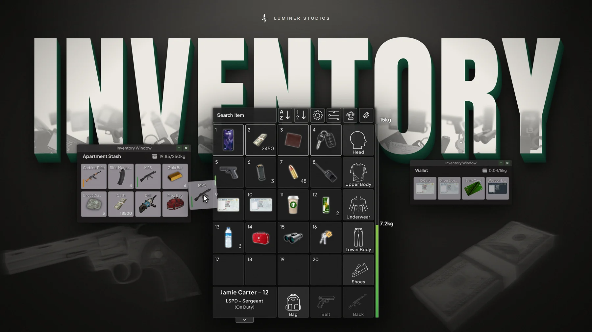

Çok oyunculu çevrimiçi platformMultiplayer online platform
FiveM (GTA V'in çok oyunculu platformu) üzerinde bir rol yapma sunucusu kurdum. Sunucu mimarisini Lua ve MySQL ile sıfırdan tasarladım: oyuncu verisi, oturum yönetimi, ekonomi. Yönetim panelini ve oyuncu arayüzlerini React ve TypeScript ile geliştirdim. Geliştirici, tasarımcı ve test uzmanlarından oluşan ekibi yönettim.
I built a roleplay server on FiveM, the multiplayer platform for GTA V. I designed the server architecture from scratch in Lua and MySQL: player data, sessions, economy. I built the admin panel and the player interfaces in React and TypeScript, and led a team of developers, designers and testers.
- 200–250 düzenli oyuncu, 6 ayregular players over 6 months
- 450 üyeli toplulukcommunity members
- 10–15 kişilik ekipperson team